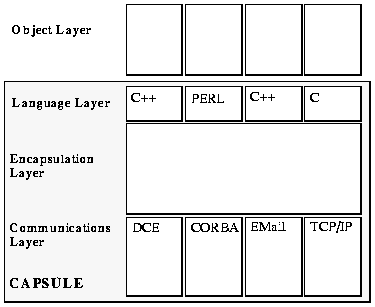

CRC for Distributed Systems Technology
University of Queensland
Australia
http://www.dstc.edu.au/
Abstract
Hector is a distributed object system written primarily in Python. It provides a communications transparency layer enabling negotiation of communication protocol qualities, comprehensive support services for application objects and a novel interaction architecture.
We discuss the implementation, the services and the interaction architecture; we also comment on the effectiveness of Python as the implementation language for the project. We conclude with an outline of the current status and future plans for the project.
A number of distributed processing environments have been developed that attempt to hide these problems from programmers, reducing the complexity of their task. Prominent amongst these are APM's ANSAware [1], the OSF's DCE [2], the OMG's CORBA [3] and Microsoft's COM [4]. In addition, the ISO and ITU-T have invested significant effort in an international standard known as the Reference Model for Open Distributed Processing (RM-ODP) [5] addressing problems in this area of work.
ANSAware is an early, and influential, implementation of some concepts from RM-ODP. Although now largely obselete, it provides facilities only now being matched by the more recently popular environments. These included federated Traders, rudimentry Type Management, and a notification service.
The OSF's Distributed Computing Environment provides a series of services for distributed programming, but does not support an explicitly object-oriented programming model. This has limited its acceptance, despite its sometimes superior design and implementation.
The Common Object Request Broker Architecture (CORBA) is a specification from the OMG now being broadly adopted across the industry, and despite its immaturity in some areas, its adoption of a fully object oriented architecture seems set to ensure its dominance over DCE.
Finally, Microsoft's Common Object Model is proposed as a distributed extension of their existing Object Linking and Embedding (now ActiveX) technology. At this point COM is more specification than implementation but it is destined to become a significant influence.
Unfortunately, none of these systems implement all the features described by RM-ODP, and in particular, each is basically a closed environment, allowing interoperation only with other objects from the same environment.
After examination of these environments and with particular reference to RM-ODP, we set about implementation of a distributed environment which overcomes their limitations.
The result is Hector, a framework which sits above other distributed environments, providing open negotiation and interoperability of communication protocols, high level description of component services and their requirements, a rich set of support services for objects and an interaction framework which allows the description of workflow-like interactions between autonomous objects.
The prototype is implemented almost entirely in Python, taking advantage of the language's wide support for other services and powerful syntax, enabling rapid development.
RM-ODP defines a number of transparencies described in some detail by Linnington [6]. An important attribute of transparencies in RM-ODP are that they are removable - a programmer can elect to manipulate the underlying functionality directly if desired.
Hector attempts to provide application objects with a consistent environment, regardless of their physical location, through a series of transparencies. Designed with the goal of supporting a dynamic, global system of distributed objects, it embraces diversity through extensibility. Specifically, we support
RM-ODP, and subsequently Hector, extend this notion with the formal concept of bindings. A binding is a specification of a set of roles, and the communication patterns between those roles needed to perform some higher level function.
This allows complex, enterprise-level tasks to be described as binding types, similar in some ways to work-flow descriptions.
Hector provides an abstract Binding class which is specialised by application programmers. The kernel can then instantiate these derived classes. The instantiation process establishes the communication channels described by the binding type.
For example, the requirements of a distributed meeting scheduler can be specified at programming time as a binding type encompassing individuals' calendars, room and equipment reservation services, notification to a news service and the scheduler component itself. The construction of the required peer-to-peer communication channels at runtime is left to the infrastructure rather than being explicitly programmed.
Hector guarantees to provide a fixed set of fundamental services at every location. The actual implementation of the services can vary, but the service interface provided to objects is standardised and guaranteed to be available.
We have selected nine fundamental services, with a particular emphasis on providing a rich environment for objects. These services are:
We are using the Elvin [7] notification service, being developed as a parallel activity at the DSTC.
One of our major areas of work is the interoperation of security services, including means of authentication, authorisation and protection of privacy.
Service providers advertise their service, describing their attributes. Service consumers query the Trader which returns a list of possible providers.
The Trading service interface is modelled on the proposed joint ISO ODP / OMG CORBA Trader specification [10].
The resolution of this key is dependent upon a configurable hierarchy of policy contexts. If no match is found within the initial context, resolution proceeds up a chain of nested contexts.
The specification of the context ordering is configurable on a host, network or enterprise basis.

During execution, the three lower layers combine to form a single entity called the Capsule, which provides a support environment for Object execution. It encapsulates and insulates Objects from the underlying machine and operating system architectures.
The Capsule is an executable program, normally started by privileged users. Multiple Objects can exist within a Capsule, each being allocated an initial thread (which may spawn more). Each Object is associated with a security principal which controls its access to the resources of the Capsule and its host. Multiple Capsules can be run on a single host; the choice of whether to instantiate an Object within an existing Capsule or to create a new one is a matter of performance tuning.
Components of the language and communication layers can be dynamically loaded at runtime. Specific communication and language modules are typically configured when starting a Capsule, but they can be added or removed by the Capsule's owner at any time.
During execution, each layer is comprised of instances from a number of classes. These are discussed in more detail in the following sections.
The interface between the Object and Language layer represents the complete set of facilities available to an Object. (While it is currently possible for an Object to directly access operating system functions, this ability will be removed in a future version once replacement services are available and suitable security services are implemented. The Service class, derived from Object, will retain its access to the host's facilities and can be used to make them available to other Objects.)
Objects are created from Templates - a description of an Object type which can be interpreted by the appropriate language layer to create instances. Objects are instantiated by the Capsule as a result of operations on the Capsule management interface.
Each language binding performs three basic functions, the first of which is mandatory.
Each language binding consists of a set of classes encapsulating the facilities provided by the Capsule Kernel and the fundamental services. These classes are
The base Message class of a language binding must also map the native language data types onto those supported by the kernel. This issue has already been addressed (to different extents) by DCE, CORBA and ILU - we intend to borrow heavily from their work in this area.
Hector Interfaces must explicitly describe all communication external to the Object. Interfaces use Message types to specify the content of communicated data, while the ordering, permitted concurrency and other qualities of service related to the communication are directly constrained by Interface types.
During instantiation of Bindings, Interface instances are required to satisfy the Role types.
The use of Message, Interface and Binding types allows a programmer to ensure the robustness of an Object while allowing dynamic use of different service implementations and communication protocols. The kernel ensures that the abstract communication specified by the Binding occurs correctly or generates exceptions.
Each Capsule makes an instance of these classes available to its Objects. Services themselves are a specialised subclass of Object implemented with careful negotiation of their mutual dependencies.
Template Languages
Language bindings can provide support for additional Template formats if required. A Template is a description of a type with enough detail to allow its instantiation.
The Python language binding provides two Template formats: .py and .pyc-style strings. Some initial work has also been done on implementing a Unix shared object file template format, with the intention that it be used for compiled languages. Additional compiled languages are unlikely to require a new template language since they can share the mechanism for loading shared object file templates.
However, most interpreted languages have one or more executable formats. Typically the raw source or a pre-parsed/checked byte-code are acceptable to the interpreter. Both of these formats can be used as a template language.
Interpreters
Finally, Template languages other than OS/processor-specific machine code will require that Capsules load an interpreter module. This will normally require the interpreter to be available as a dynamically loadable module able to be called by the Capsule.
Languages (such as Smalltalk) which are dependent on a large runtime system or are difficult to call from C are likely to be problematic. This is an area of ongoing work.
Python Language Binding
The initial language layer supports Python. It is available by default, since the visible kernel classes are actually written in Python, making the wrapper classes very simple.
For Python, Object Templates consist of either Python source code or the tokenised source used in .pyc files. The Python language layer uses a modified version of import to fetch imported modules from the Type service, before attempting to locate them locally. This allows host machines to provide only the basic Python installation with all other modules served from a LAN-based distribution service.
Interface instances are implemented by one or more Endpoint instances, depending on their required connectivity to other Objects. The actual mapping of an Interface to a set of Endpoints is performed by the Binding constructor using the initiating Object's policy setting to choose a preferred communication protocol for each physical connection.
Description of Bindings and Interfaces has traditionally been performed using a combination of an IDL and its compiler together with some program code. Hector provides a graphical editor for Interface and Binding type manipulation. It allows the description of the Interface events, their sequencing constraints and the connection between Interfaces to form Bindings.
A Capsule Browser provides a means to manage the Capsules running across a network. The browser can display the state of the Capsule, Services, Communication modules, Language Modules, loaded Templates and instantiated Objects. A user can load or unload modules and templates, and create new Objects from a loaded template.
The Capsule Browser uses the Capsule's management interface to perform these operations, and this interface is also available to any other Objects with appropriate permissions.
Finally, the Capsule Browser also provides support for the fundamental Capsule services. The Trader, Type Manager and Policy services are all accessible using specific control panels within the Capsule Browser.
The first release included a simple, UDP-based messaging protocol, a simple Trading service, a notification service, and supported objects written in Python.
The next release will include
While we have not yet chosen any particular protocols, those that interest us include
We have also done some preliminary work on a language binding to C++. This will probably be integrated with the core system in the next release.We are also investigating support for Java (of course!) and ParcPlace VisualWorks Smalltalk (which is heavily used by another local project).
Additional plans include implementation of the Relationships and Banking services, which together with a parallel project to provide the security services are expected to complete the fundamental services of the core system.
Further distant, work is planned for customisable, distributed user interface services [15] and object migration and persistence services [16].